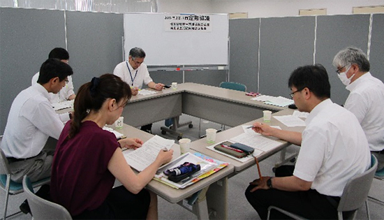

埼玉県と埼玉県生協連との第1回定期協議報告
2020年度埼玉県予算編成・行政執行に関する要望を提出
7月31日(水)10時より、埼玉県生協連会議室にて、2019年度埼玉県と埼玉県生協連の第2回定期協議を開催しました。
- 出席者：
- 埼玉県県民生活部消費生活課：関口修宏課長、島村英雄主査
- 埼玉県生協連：
- 吉川尚彦(会長理事)､大久保美紀(常務理事)、清水勤(組織担当)加藤一彦(事務局長)
1．あいさつ
関口課長：埼玉県消費生活基本計画は今年折り返しの年となります。目標を達成するために、県としても新しい動きを作っていかなければと思っています。高齢者だけでなく、成年年齢引き下げに向けた施策も行っていきます。
吉川会長理事：日頃から、生協へのご理解とご協力をいただき、会員生協をサポートいただいていることは、ありがたいと思っています。引き続きパートナーシップを築いていきたいと思っています。
2．議題
- (1) 吉川会長理事から埼玉県生協連の2020年度埼玉県予算編成ならびに行政執行に関する要望(21項目)について説明を行い、埼玉県に提出しました。
- (2) 埼玉県より、2018年度生協検査の実施報告と、今年度の生協検査の計画について、報告がありました。今年度に入り実施された厚生労働省主催の生協検査に関する会議では、内部管理や機関運営の状況、内部けん制機能、個人情報管理、取引の適正化、剰余金処分などの検査について議題となったとのことです。なお、今年度は5組合の生協検査を予定しているとのことでした。報告のあった前年度の指摘項目は次のとおりです。

- ①代表理事の登記変更手続きの不備に関する指摘。
- ②監事会の監査計画はあるが、具体化されておらず、計画どおりにおこなわれていなかったことへの指摘。
- ③役員選考委員会の議事録の不備に関する指摘。
- ④規定内容にそった運用がされていないことへの指摘。
- (3) それぞれの報告後、会員生協を含めた県内生協の状況についてや、消費者被害防止に向けた取り組み、地域社会づくりについて懇談を行いました。